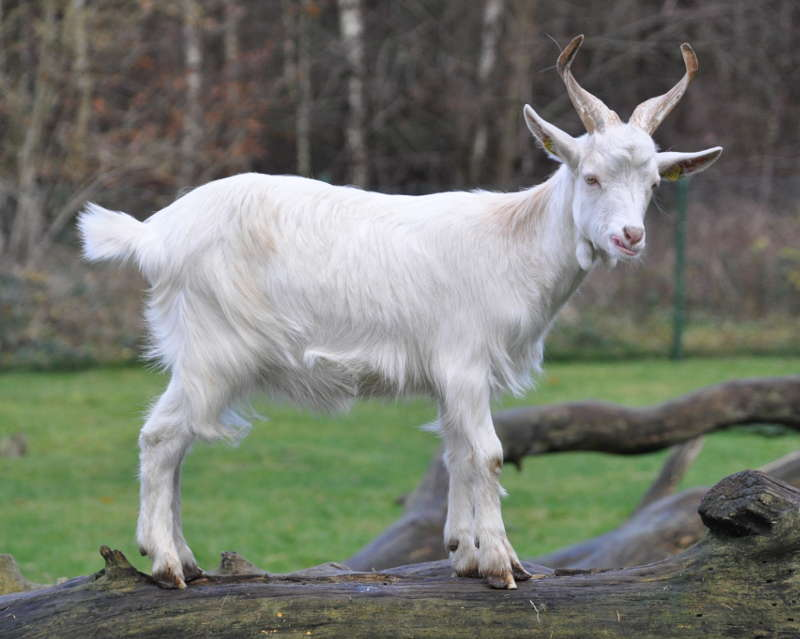

I'm a software engineer by day and love learning about the brain by night. It all started at Tufts University in Boston where I studied >Computer Science, Cognitive & Brain Sciences, and Music at Tufts University. For the last 6.5 years, I worked at Spotify building personalized playlists, creating your end of year Wrapped, making the "Smart Shuffle" feature, developed foundational Audiobook datasets, and brought upcoming releases to your Home page as well as the Home Friday Takeover!
In my free time, I love cooking Italian food, hiking through foliage-filled mountains, singing harmonies with my friends, cross-stitching and knitting, learning the Korean language, and reading fantasy novels that make me wish I had magical powers. In college, I sang in an a cappella group and a jazz improv combo so you can often find me humming to myself. I grew up playing classical piano, and learned to fall in love with Debussy, Mozart, Chopin, Schumann, and Astor Piazzolla.
My name directly translates to "white baby goat" in Italian. If you google my full name and click on 'Images', you will notice me surrounded by white goats. I kid you not (pun intended)!
